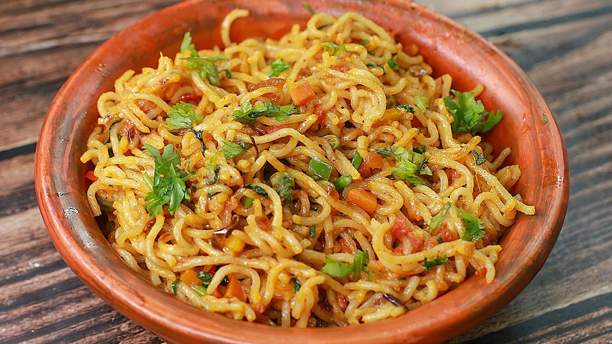
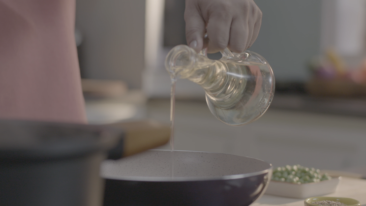
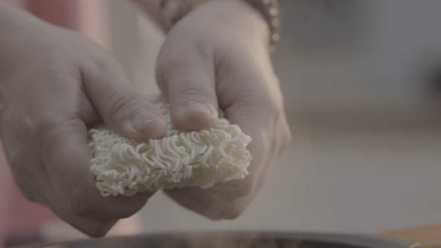
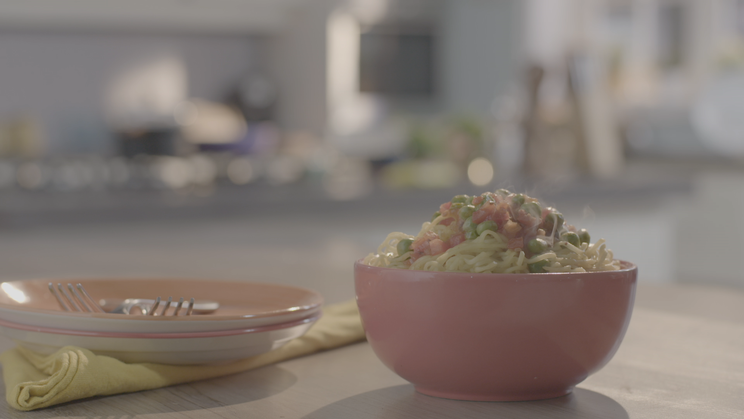
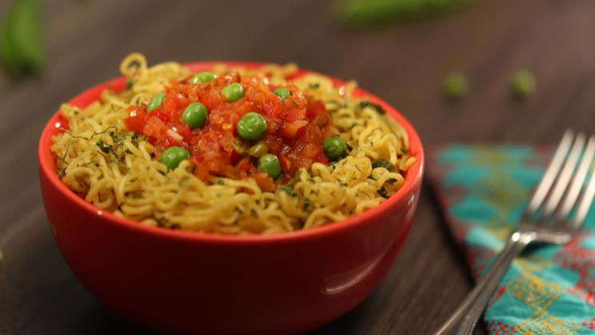

KASTOORI METHI MAGGI

Description
Maggi is an international brand of seasonings, instant soups, and noodles that originated in Switzerland in the
late 19th century. The Maggi company was acquired by Nestlé in 1947.
By 2020, as part of the Simply Good initiative, the domestic Maggi range is to be geared more towards well-known
and healthier ingredients and the salt content to be reduced.
Ingredients
- 1 Packet MAGGI 2-Minute Noodles (Masala)
- 4 Tablespoons MAGGI Rich Tomato Ketchup
- 1 Tablespoon Oil
- 1 Teaspoon Cumin Seeds
- 2 Tomato (Finely Chopped)
- 1 Onion (Finely Chopped)
- 1 Cup Peas
- 1 Pinch Salt
- 0.5 Teaspoon Kastoori Methi
Steps
- Prepare ingredients as mentioned in the list.

- Heat the oil and then roast the cumin seeds in it. Then, toss in the
tomatoes, the onions and cook them well. Add the peas and the MAGGI Tomato
ketchup, give it a stir, and let them cook for a while!

- Cook one pack of MAGGI Masala Noodles (just follow the instructions on the pack!). Add the kastoori methi
while cooking noodles.Transfer the noodles into a bowl.

- Put the cumin-tomato-onion mix right on top of the MAGGI noodles and you are ready to serve the easy peasy
fun!

I wanna see more recipes!